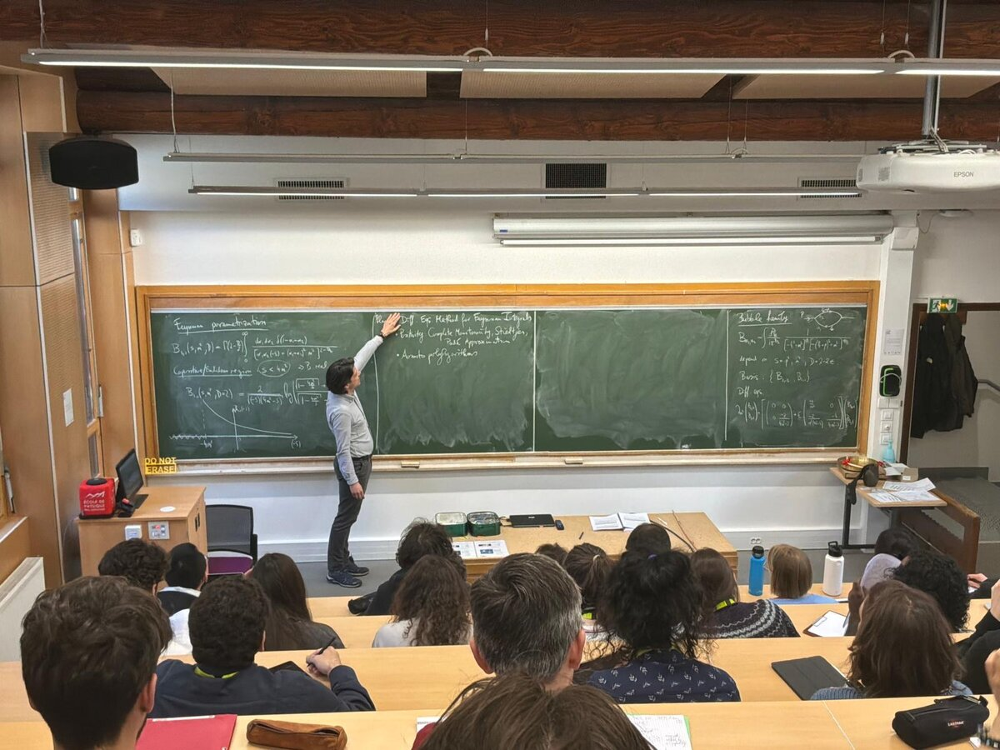

For students
Source material on the research topics of our group — a starting point for MSc and PhD students, and for anyone preparing to join us. For how to apply, see Join & collaborate.
Textbook
Topics & reading
Scattering amplitudes
- Review article: What can we learn about QCD and collider physics from N=4 super Yang–Mills? (arXiv:2006.00361), published (open access) in the Annual Review of Nuclear and Particle Science.
- Training material collected by the SAGEX network.
Feynman integrals & differential equations
- Lecture notes: Lectures on differential equations for Feynman integrals (arXiv:1412.2296), based on lectures given at NORDITA — video recording.
Positive geometry
See the learning resources collected by the UNIVERSE+ collaboration.
Duality between Wilson loops and gluon amplitudes
- PhD thesis: Duality between Wilson loops and gluon amplitudes (arXiv:0903.0522), published in Fortschr. Phys. 57 (2009) 729–822.
Theses from the group
To get an idea of what a thesis in our group can look like:

Lectures at schools
- Lectures at the Amplitudes Summer School 2022, Prague (video recording).
- Lectures on differential equations for Feynman integrals at NORDITA — see above.
Slides of further talks and colloquia are on the Talks page.